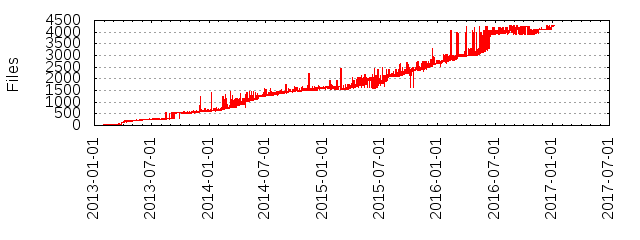

Files
- Total files
- 4279
- Total lines
- 1086838
- Average file size
- 8192.96 bytes
| Extension | Files (%) | Lines (%) | Lines/file |
|---|
| 314 (7.34%) | 26509 (2.44%) | 84 |
| APACHE | 1 (0.02%) | 191 (0.02%) | 191 |
| BSD | 1 (0.02%) | 27 (0.00%) | 27 |
| aarch64 | 2 (0.05%) | 200 (0.02%) | 100 |
| armhf | 2 (0.05%) | 207 (0.02%) | 103 |
| c | 17 (0.40%) | 149547 (13.76%) | 8796 |
| cert | 1 (0.02%) | 19 (0.00%) | 19 |
| conf | 4 (0.09%) | 403 (0.04%) | 100 |
| confd | 1 (0.02%) | 13 (0.00%) | 13 |
| config | 1 (0.02%) | 17 (0.00%) | 17 |
| crt | 4 (0.09%) | 84 (0.01%) | 21 |
| default | 2 (0.05%) | 20 (0.00%) | 10 |
| env | 6 (0.14%) | 16 (0.00%) | 2 |
| fc | 3 (0.07%) | 82 (0.01%) | 27 |
| fish | 1 (0.02%) | 405 (0.04%) | 405 |
| gif | 1 (0.02%) | 253 (0.02%) | 253 |
| gliffy | 5 (0.12%) | 0 (0.00%) | 0 |
| go | 3379 (78.97%) | 810825 (74.60%) | 239 |
| gotmpl | 1 (0.02%) | 26 (0.00%) | 26 |
| gz | 1 (0.02%) | 18 (0.00%) | 18 |
| h | 12 (0.28%) | 11222 (1.03%) | 935 |
| ico | 1 (0.02%) | 38 (0.00%) | 38 |
| if | 3 (0.07%) | 1643 (0.15%) | 547 |
| init | 1 (0.02%) | 0 (0.00%) | 0 |
| initd | 1 (0.02%) | 22 (0.00%) | 22 |
| install | 1 (0.02%) | 12 (0.00%) | 12 |
| json | 10 (0.23%) | 1370 (0.13%) | 137 |
| key | 5 (0.12%) | 135 (0.01%) | 27 |
| label | 1 (0.02%) | 1 (0.00%) | 1 |
| lock | 1 (0.02%) | 52 (0.00%) | 52 |
| manifest | 1 (0.02%) | 17 (0.00%) | 17 |
| manpages | 1 (0.02%) | 1 (0.00%) | 1 |
| mc | 1 (0.02%) | 39 (0.00%) | 39 |
| md | 273 (6.38%) | 54402 (5.01%) | 199 |
| nanorc | 1 (0.02%) | 26 (0.00%) | 26 |
| pem | 13 (0.30%) | 469 (0.04%) | 36 |
| plist | 1 (0.02%) | 16 (0.00%) | 16 |
| png | 13 (0.30%) | 1465 (0.13%) | 112 |
| postinst | 1 (0.02%) | 20 (0.00%) | 20 |
| ppc64le | 2 (0.05%) | 213 (0.02%) | 106 |
| proto | 65 (1.52%) | 9948 (0.92%) | 153 |
| ps1 | 2 (0.05%) | 499 (0.05%) | 249 |
| rc | 3 (0.07%) | 45 (0.00%) | 15 |
| rpm | 1 (0.02%) | 28 (0.00%) | 28 |
| rules | 1 (0.02%) | 3 (0.00%) | 3 |
| s | 31 (0.72%) | 2571 (0.24%) | 82 |
| s390x | 2 (0.05%) | 206 (0.02%) | 103 |
| service | 1 (0.02%) | 29 (0.00%) | 29 |
| sh | 45 (1.05%) | 4823 (0.44%) | 107 |
| simple | 1 (0.02%) | 73 (0.01%) | 73 |
| socket | 1 (0.02%) | 12 (0.00%) | 12 |
| solaris | 2 (0.05%) | 24 (0.00%) | 12 |
| spec | 2 (0.05%) | 363 (0.03%) | 181 |
| svg | 5 (0.12%) | 0 (0.00%) | 0 |
| sysconfig | 1 (0.02%) | 7 (0.00%) | 7 |
| tar | 9 (0.21%) | 325 (0.03%) | 36 |
| te | 3 (0.07%) | 1278 (0.12%) | 426 |
| tmLanguage | 1 (0.02%) | 143 (0.01%) | 143 |
| txt | 2 (0.05%) | 18 (0.00%) | 9 |
| udev | 1 (0.02%) | 0 (0.00%) | 0 |
| upstart | 1 (0.02%) | 0 (0.00%) | 0 |
| vim | 2 (0.05%) | 32 (0.00%) | 16 |
| windows | 1 (0.02%) | 267 (0.02%) | 267 |
| yaml | 4 (0.09%) | 7804 (0.72%) | 1951 |
| yml | 2 (0.05%) | 379 (0.03%) | 189 |